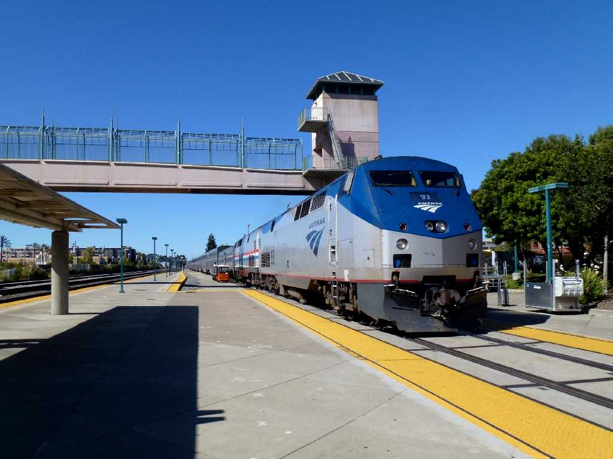
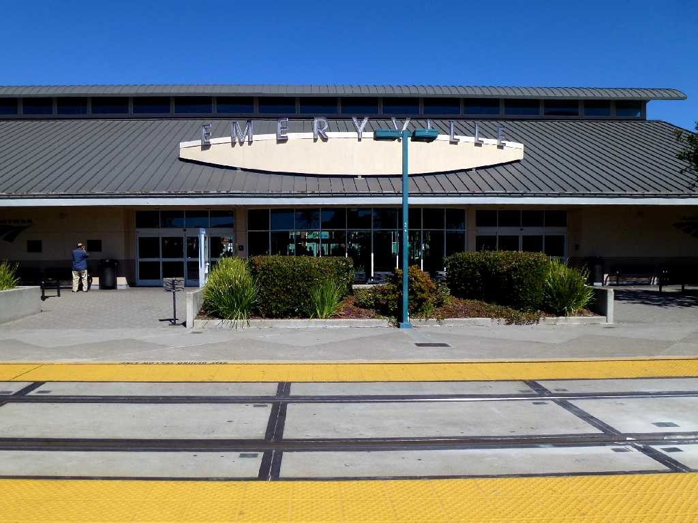

September 5 2013 Emeryville Station
California Zephyr Train No.5 Timetable Amtrak September 3 14:00 Union Chicago to September 5 16:10 Emeryville
８０日間世界一周鉄道の旅で７４日目 アムトラックのカリフォルニアゼファーでシカゴユニオン駅を出発し２泊３日でサンフランシスコ郊外のエメリービル駅に到着し連絡バスでサンフランシスコ中心街に向かう

September 5 2013 Emeryville Station
世界一周鉄道の旅はロシアのウラジオストック駅を出発してアメリカ合衆国のエメリービル駅に到着し約２０,０００㎞の鉄道の一人旅が終り学生時代以来約４０年ぶりのサンフランシスコを観光したのちＪＡＬ1便で羽田に帰国する